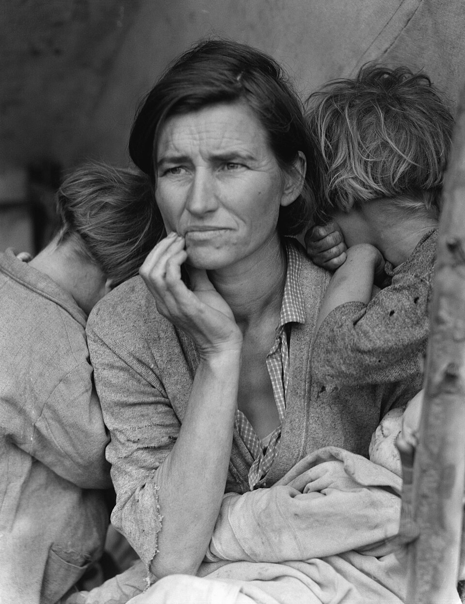
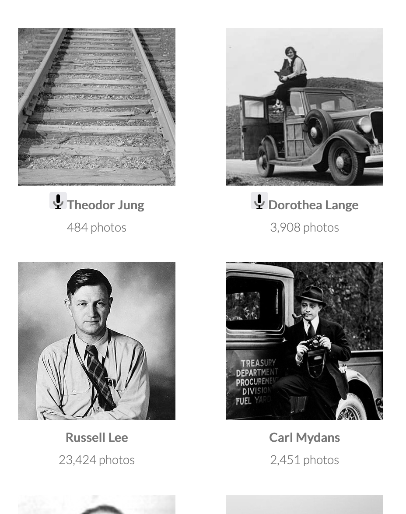
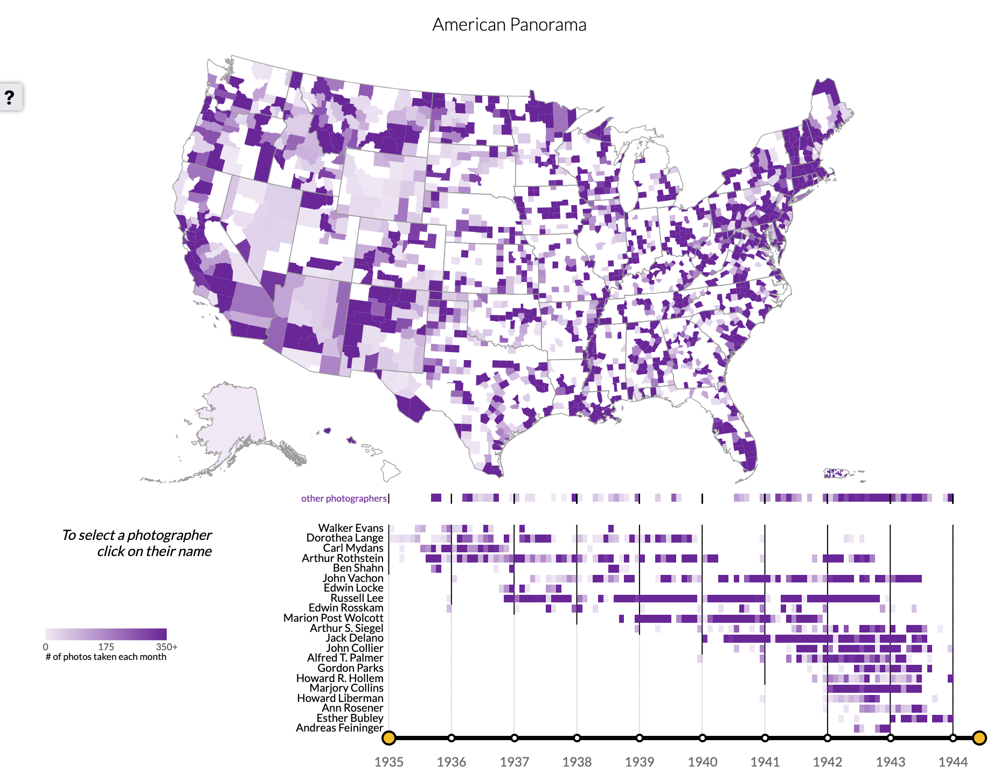

Photogrammar: A Review
Photogrammar is a website made by a team of scholars including Taylor Arnold, Lauren Tilton, Laura Wexler (Yale University), Courtney Rivard (University of North Carolina, Chapel Hill), and Robert K. Nelson, Justin Madron, and Nathaniel Ayers. It collects about 170,000 photos taken by government photographers between 1935 and 1944. The site lets you explore the photos through interactive maps, a timeline of the photographers, and short biographies on the side.
The photos were taken by a government unit that started during the Great Depression to show off Franklin Roosevelt’s New Deal programs. It then grew into a bigger effort to document everyday American life. During World War II, many of these photographers started taking propaganda photos for the war effort, while others continued showing everyday life. The most famous of these images are for example Dorothea Lange’s “Migrant Mother” which is a very dust bowl, rural poverty centered image. Photogrammar’s main argument is that the collection is much bigger than that. Its maps on the website show photos from almost every part of the country, including cities like New York, Chicago, and Detroit. The site makes this point through its maps, but it never says it outright.


Photogrammar’s data comes from the Library of Congress’s records for each photo, which list the photographer, date, location, and caption. The site uses this information to then sort the photos by place, time, and photographer. The data shows things you wouldn’t notice from just the famous photos alone. For example, Russell Lee took over 23,000 photos for the project, while Dorothea Lange only took about 3,900, so the most famous photographer wasn’t the one who shaped the collection most. The data does have some gaps. Many of the photos have no title and are labeled as being “possibly related to” another photo, and not every photo has a known location to put on the map. Alongside the data, the site includes history interviews with several photographers from the Smithsonian’s Archives of American Art, which add the photographers' voices to the numbers.
Photogrammar is organized around a simple menu at the top of the page with sections for the introduction, a search bar, list of photographers, themes (ie work, homes and living conditions, transportation, etc), two different interactive maps, and an about page. This makes it easy to move between the different ways of exploring the photos. The maps are the center of the site. The county map shades each county darker the more photos were taken there, and the cities and towns map uses circles that get bigger with more photos. Below each map is a timeline showing when each photographer was working, and clicking a photographer’s name shows only their photos on the map. These tools all work well together, but they can be hard to make sense of at first. The timeline lists over twenty names and gets crowded, and the only instructions for the site are hidden under a small “?” button. The county map is also arguably a little misleading because large western counties can stand out more on the map even when they don’t have more photos than the smaller counties in the East.

Photogrammar seems designed for several audiences at once, including researchers, students, and anyone curious about American history. Casual visitors can look through random photos or look up their own county to see what life looked like there. Researchers can search by photographer, date, location, or the collection’s original subject categories. The Introduction and Photographers pages explain the history of the project clearly, which helps visitors who didn’t already know about the New Deal. However, the site is better at giving people tools than explaining what those tools reveal. A visitor who doesn’t already know the collection’s reputation might not realize why the maps are challenging it. Adding a short guide or a few examples to point out patterns might help the site’s argument reach a wider audience. Overall, Photogrammar is a valuable and easy to use resource that shows how mapping data can change how we view a famous archive. Its biggest strength is letting visitors see all 170,000 photos as a whole, revealing a bigger picture of American life during the 30s and 40s than the few famous pictures suggest.